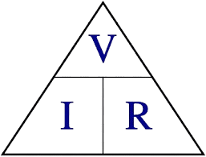

Primeira Lei de Ohm
A Primeira Lei de Ohm estabelece que a corrente elétrica que percorre um condutor é diretamente proporcional à tensão aplicada e inversamente proporcional à resistência. A equação que expressa essa relação é:
V = R * I
Onde:
- V = Tensão elétrica (Volts)
- R = Resistência elétrica (Ohms)
- I = Corrente elétrica (Amperes)
Segunda Lei de Ohm
A Segunda Lei de Ohm explica que a resistência elétrica de um condutor depende do material do qual é feito, do seu comprimento e da sua área de seção transversal. Sua equação é:
R = p * (L / A)
Onde:
- R = Resistência elétrica (Ohms)
- p = Resistividade do material (Ohm metro)
- L = Comprimento do condutor (metros)
- A = Área da seção transversal (metros quadrados)
Tabela de Unidades
| Unidade | Símbolo | Grandeza |
|---|---|---|
| Volt | V | Tensão elétrica |
| Ampère | A | Corrente elétrica |
| Ohm | Ω | Resistência elétrica |
| Ohm·metro | Ω·m | Resistividade elétrica |
| Metro | m | Comprimento |
| Metro quadrado | m² | Área |